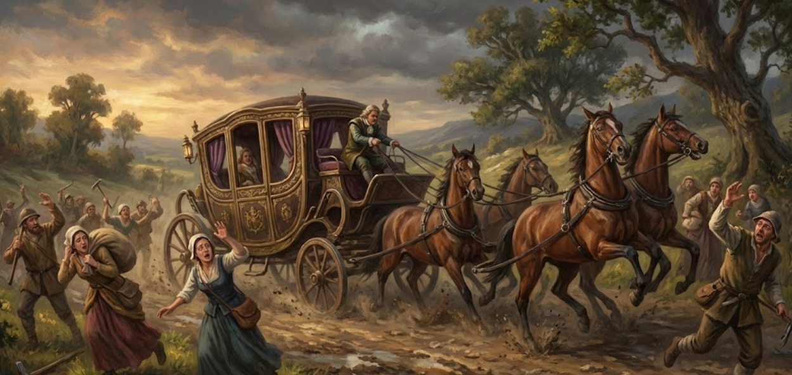
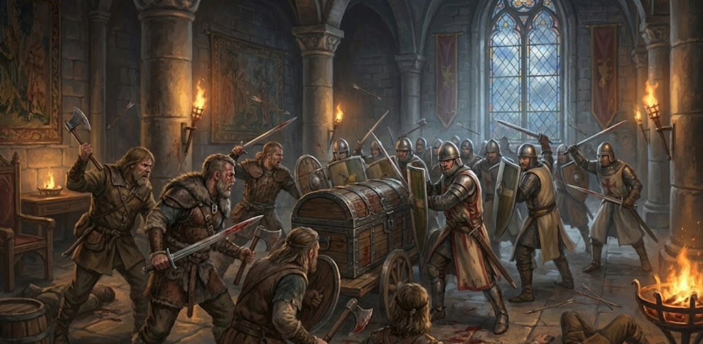
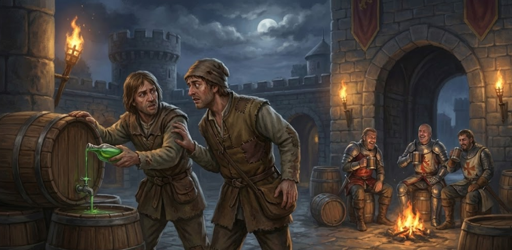
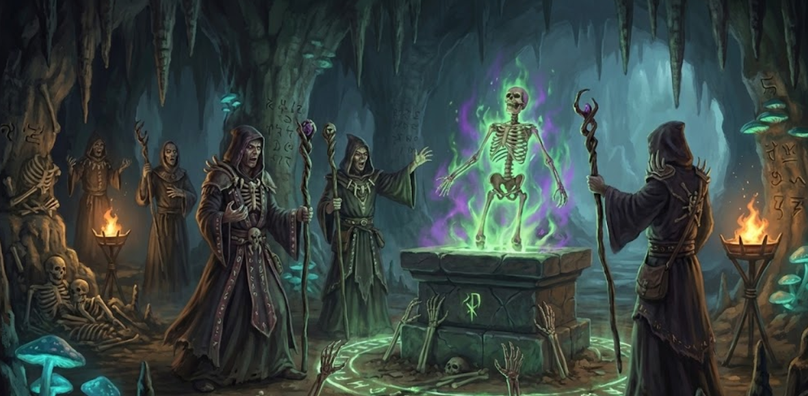
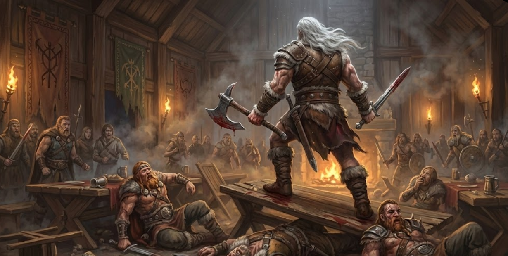
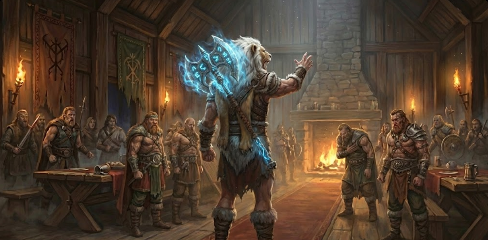

In this section, we explore the faction’s lore, analyzing its history, culture, and relationships with other factions.

The Origins of Kharos
The Kharos Dominion rose from humble and blood-soaked beginnings. It started in Rhodas, a small village like any other, until the day tragedy struck. A band of marauders descended upon them, pillaging the homes, slaughtering the men and children, and dragging the women away into the night. In the smoldering ruins, the survivors faced an agonizing choice: one group chose to pursue the bandits in a desperate rescue mission, while the others—convinced it was a suicide run—chose to stay behind.
After burying their dead, those who stayed sought asylum in a neighboring village, but the gates were barred against them. Desperate and starving, they encountered a lavish carriage belonging to a wealthy nobleman. Instead of offering compassion, the nobleman ordered his coachman to lash the horses forward. The heavy wheels trampled a young man named Kharos. As he lay broken in the dirt, he uttered his final, haunting words: "Why...? It is... so unfair..."
Anger, cold and sharp, replaced their grief. The villagers tracked the carriage, ambushed it, and dragged the nobleman and his driver from their seats. They called it "Justice." When a second carriage escorted by armored knights arrived and attacked them without listening to their pleas, the villagers overwhelmed them with sheer, desperate numbers. The surviving nobleman mocked them, stating the army wouldn't waste resources on "burnt hovels."
At that moment, the logic of the world was revealed to them: protection is for the rich; the poor are but fuel. They executed the survivors, stripped the knights of their steel, and forged a new path. Thus, the Kharos Gang was born, with a new creed: "If the world shows no mercy, we shall show none in return."

Brothers versus Brothers
The gang grew in numbers, raiding noble convoys with brutal efficiency. Seeking news, they approached a nearby village only to find the other group of survivors living there. The army had rescued them and granted them a place to live, along with a large portion of the recovered bandit treasure.
What should have been a reunion birthed something insidious: envy. Why did they have to suffer and become murderers, while the "weak" feasted and had comfortable lives handed to them? Resentment boiled over. A group of Kharos’s men demanded the chest of gold as their "right," and when their former friends refused, the tension snapped into violence.
The army had left no garrison, and a full-fledged fratricidal battle erupted. Fueled by rage, the gang massacred the village, repeating a desperate justification: "It is right. We deserve this because we are stronger." This village was the first of many to be pillaged. They became "The Bane of Villages," convinced that their monstrous fall was actually an "evolution" toward true strength.

The Great Heist
The gang set their sights on Calig, a rapidly prospering settlement that lacked kingdom affiliations but boasted advanced defenses. Spotting the arrogance of the villagers, the Kharos leaders devised a "Trojan Horse" strategy. They faked a defeat and begged for mercy to enter the village as "penitents." A grumpy, silent warrior warned the leaders against them, but he was mocked and arrested.
By evening, the trap was sprung. The gang poisoned the guards, opened the gates, and began looting everything—including a hidden magical library containing "forbidden" spellbooks. But as the fires rose, the grumpy warrior appeared alone in the smoke.
A third of the Kharos forces were decimated by this single man. Realizing they could not win, the leaders retreated into the night with their loot and slaves. It was a humiliating disgrace, but also a vital lesson: there is always a bigger fish in the ocean.

The Rise of the Dominion
The crushing defeat at Calig served as a brutal awakening. Lacking education and refined techniques, they used their spoils to grow. They forced their educated captives to teach them literacy and logic, and coerced imprisoned guards into training them in professional combat. They used the stolen books to develop farming techniques and delve into the dark arts of Necromancy.
Establishing multiple hidden outposts, their wealth attracted mercenaries and scholars. They organized into Tribes led by "Chieftains." When they reached twenty tribes, they built their first permanent settlement, named Kharos.
However, their monthly summits were chaotic. Infighting prevented the Dominion from becoming a true world-ending threat. They had the tools and the numbers, but lacked a single, unifying will.

The First Warchief: The Rise of Themis
Among the Calig captives was a pregnant schoolteacher whose son, Themis, grew up to be a prodigy of violence in the lawless Dominion. Viewing humanity as stray dogs, he became a feral protector of his mother and a legendary warrior whose prowess could decimate imperial knights effortlessly.
During a petty monthly summit, Themis’s patience finally snapped. He brutally crushed a Chieftain who dared to mock him, laying waste to the opposition in a blur of motion before addressing the room.
The Chieftains saw no greed in his eyes, only the unwavering determination of an Alpha predator. They did not crown him a King; they submitted to him as their Warchief.

Themis Reign
Once Themis became Warchief, he enforced absolute obedience. Superiors had complete authority, but were forbidden from discarding "useful" people without proven cause. To ensure the Dominion reached its peak potential, he instituted the annual Day of Evolution and created the Overseers to govern it. Kharos finally found stability and prospered.
As symbols of his right to rule, Themis hunted a manticore barehanded to wear its head as a hat, and forged an axe from magical magma rock that empowered the user's rawest emotions. He won countless battles against nearby kingdoms, facing only one true stalemate: a bloody draw against the newly born city of Padineon (the Valkyrion Empire).
Traumatized by the horrors of that war, Themis eventually decreed that the Dominion would be left to the winner of the Day of Evolution, and vanished alongside his mother. Five centuries have passed, and a long lineage of Warchiefs has kept the Dominion at the apex of its brutal power.